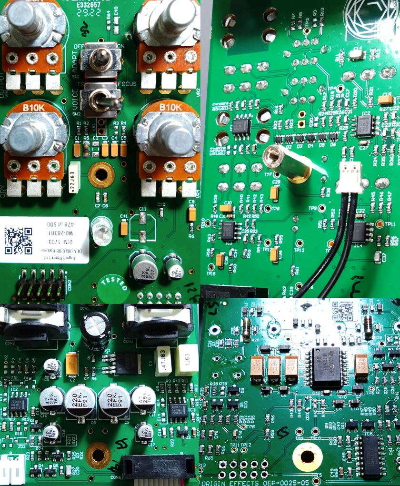
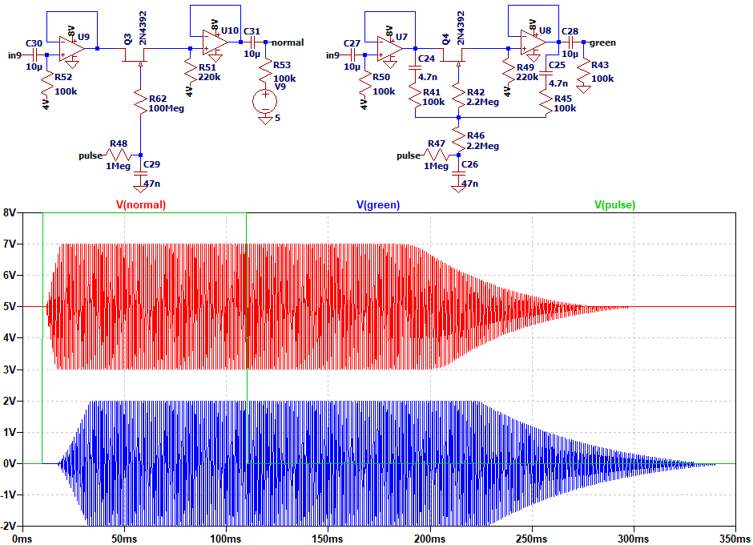
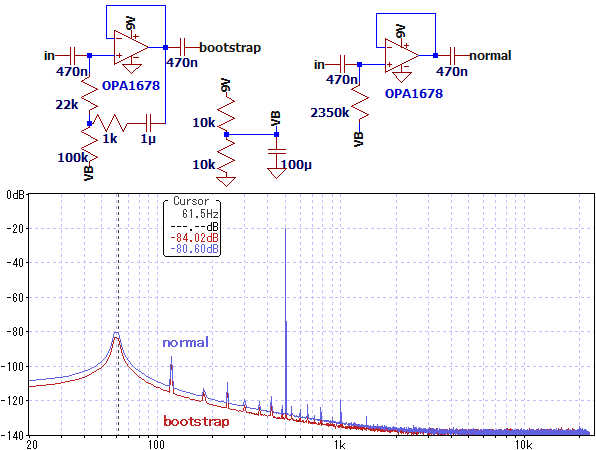
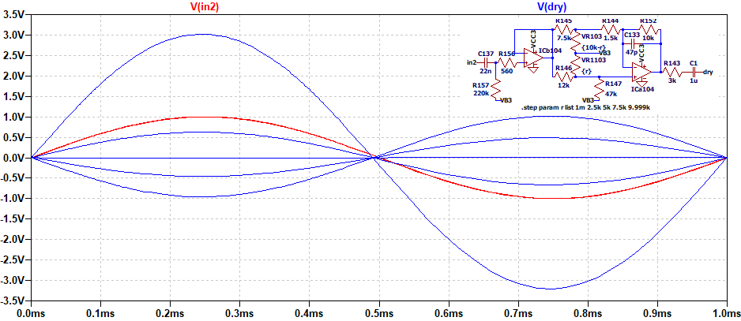
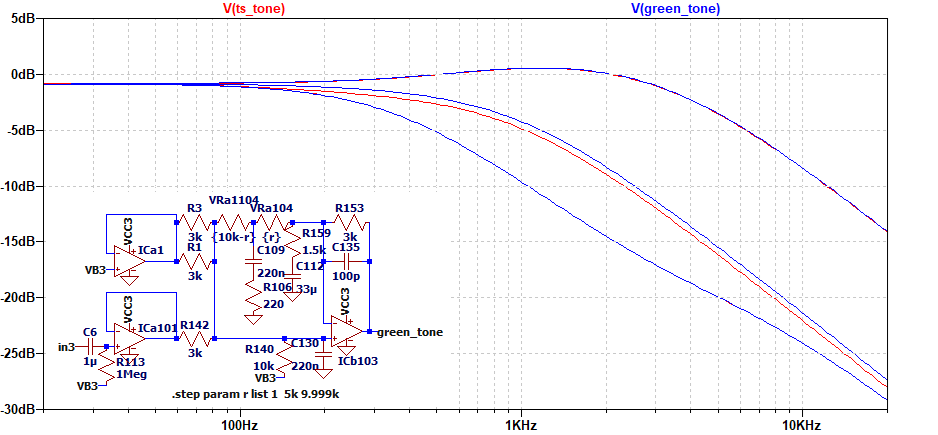

ORIGIN EFFECTS Halcyon Green Overdrive 解析
2025年09月20日 カテゴリー：修理・改造・解析

ORIGIN EFFECTS Halcyon Green Overdriveは、Tube Screamer（以下TS）を元にしたペダルです。アダプティブ回路というオリジナル回路がどのようなものか気になったため、解析してみることにしました。KiCadデータ（基板画像入り）とLTspiceの回路図データはGitHubにあります。
【基板】
4層基板で、RevivalDRIVE Compactとは違い内層にも配線がありました。グラウンドは入出力部分のみ分離されています。何も装着されていないコネクター（CON2）は、動作確認用と思われます。
【回路図】

一部のオペアンプは正負電源駆動が検討されていたようですが、結局正電源のみで使用されています。負電源は、スイッチ部分にしか使用されていません。
クリッピングダイオード
GAINポットには50kΩが採用されており、これはTSの1/10の値です。ダイオードを10個並列にして電流を約10倍にし、クリッピングの仕方を同じにする意図がありそうです。C125は、TSの10倍の510pFではなく470pFです。これは、ダイオード20個分の端子間容量を考慮した可能性があります。
スイッチ周辺
JFETのゲートへ、信号を通すような接続があります。高抵抗で接続した場合とスイッチングの様子を比較しました。

若干立ち上がりが緩やかになっているように見えますが、そこまで有用とも思えず、意図は不明です。
入力バッファ
ブートストラップが使われています。ブートストラップについての詳細はBoots Up Bufferの記事をご参照ください。ブレッドボード上に下図の回路を組み、ノイズを比較しました。

わずかに低音域のノイズを減弱する効果が見られました。ただし、シールドされたケース内では差はありません。
DRY

50～100%では最大3倍の非反転出力、0～50%では最大1倍の反転出力です。TSのようなオペアンプの帰還部分のクリッピングでは、ダイオードが導通しているときはボルテージフォロワの状態とみなせるため、原音が含まれていると解釈できます。反転出力によりこの原音を打ち消す動作を行っています。
DRIVE 808 → MOD（増幅部分のみ）

高音域が強調されています。公式の説明によると、ハイゲイントーンをタイトにしたり、ハムバッカーにバイト感をプラスしたい場合に適したボイシング設定だそうです。
TONE（ADAPT O）

TSとの比較です。3系統のミックスも兼ねているので、ゲインを合わせるためにR159とC112を入れてあるようです。中間点は少しずれがあり、ポットがWカーブではなくBカーブなので変化の仕方もTSとは違ってきます。
ADAPT O → I → II
＜TONE 50%固定 GAIN 0% → 50% → 100%＞

＜GAIN 50%固定 TONE 0% → 50% → 100%＞

ADAPTスイッチにより、出力からの負帰還とクリーン音の減衰が追加されています。周波数特性は、平坦な形へと変化しています。
公式のアダプティブ回路の説明は、「ギター本体のボリュームを下げたりソフトにピッキングする時に、トーンやドライブをソフトに表現しながらも、輪郭のはっきりしたコシのあるサウンドを維持します。」となっています。シミュレーションでは音量を変えても周波数特性の形は変化しないため、アダプティブ回路の特徴を捉えることはできないと思われます。
{kind=link}
{kind=link}
{kind=link}
{kind=link}